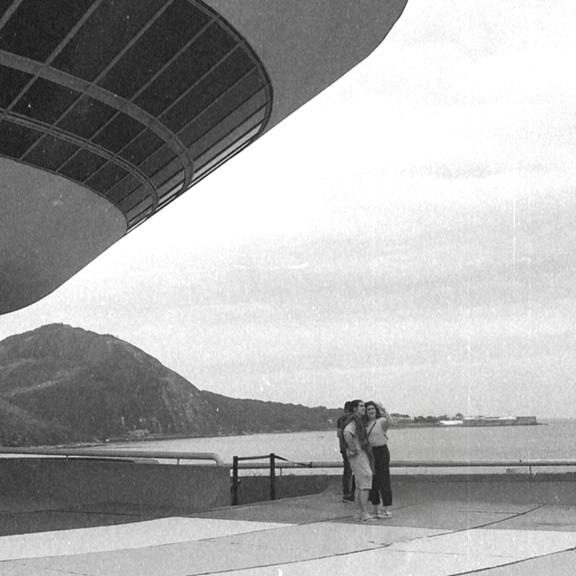

Sobre mim

Arquiteto e urbanista especializado em paisagismo e planejamento urbano, com foco na preservação do patrimônio histórico-cultural.
A formação acadêmica foi fundamental para ampliar meu embasamento teórico e minha busca contínua por conhecimento nas diversas áreas da Arquitetura e Urbanismo. Hoje trabalho entre Brasil e Portugal, do projeto de edifício ao planejamento do território.
Áreas de atuação
- Projeto de arquitetura
- Planejamento e projeto urbano
- Paisagismo e infraestrutura verde
- Patrimônio e reabilitação
Idiomas
- PortuguêsNativo
- InglêsC1
Ferramentas
- AutoCAD
- ArcGIS Pro
- QGIS
- Photoshop
- Illustrator
- InDesign
Formação e experiências
- Jan 2019 · Dez 2023Bacharelado em Arquitetura e UrbanismoPUC-Campinas
- Fev 2022 · Jun 2022Assistente Estagiário UniversitárioExtensão HABITAR 60+
- Fev 2023 · Jan 2024Assistente Estagiário UniversitárioMarcelo Novaes Paisagismo · Campinas
- Set 2024 · Jul 2026Mestrado em Ordenamento do Território e UrbanismoUniversidade de Lisboa
Projetos
Da dissertação em Odivelas à orla de Vitória e às escolas de Campinas. Clique num projeto para abrir as imagens e o caderno, ou veja no mapa onde estão.
Toque num ponto para ver os projetos desse lugar. Contornos: Natural Earth.
Estudos
Trabalhos técnicos e acadêmicos do Mestrado em Ordenamento do Território e Urbanismo.
-
Dissertação de MestradoOrdenamento do Território e Urbanismo · FA.ULisboa · 2026Regenerar infraestruturas de transporte como infraestrutura verde: Soluções Baseadas na Natureza no território de Odivelas.Ver as imagens no projetoPDF ↗
-
Dispositivos de PerequaçãoGestão Urbanística e do Imobiliário · 2025Plano de Pormenor Sul Nascente, Sines: reparcelamento, unidades de execução, custos de urbanização e plano de financiamento.Com Bárbara Galinha, Tomás Barboza e Tiago CasimiroPDF ↗
-
A cidade de 15 minutos na Póvoa de Santa IriaPlaneamento e Gestão da Mobilidade · 2025Estudo de mobilidade: o conceito da cidade de 15 minutos aplicado à Póvoa de Santa Iria, Vila Franca de Xira, com diagnóstico setorial e proposta.Com Tiago Casimiro e Alexandru ChakhachiroPDF ↗
-
The Algarve SEAStrategic Planning: Methods and Evaluation · 2025Avaliação Ambiental Estratégica: a economia azul como estratégia para o Algarve, com análise ex-ante, matrizes de coerência e quadro de monitorização.Com Alexandru Chakhachiro e Maisha RahmanPDF ↗
Aplicações
Ferramentas interativas que criei.
-
Território ExplicadoFerramenta de estudo · 2026Guia interativo do ordenamento do território em Portugal: planos, execução, licenciamento, reabilitação e fundos europeus.Abrir ↗
-
SBN nas cidades brasileirasGuia de estudo · 2026Guia interativo da Estratégia Nacional de Soluções Baseadas na Natureza para Áreas Urbanas (ENSBN-Urbana): o problema, os tipos de intervenção, o programa até 2035 e ferramentas para avaliar projetos e planos.Abrir ↗
Entre em contato
Quer conversar sobre uma vaga, um projeto ou uma colaboração? Escreva-me e respondo assim que possível.
- Localização
- Lisboa, Portugal
- Telefone
- +351 912 113 920
- Luis Andrade